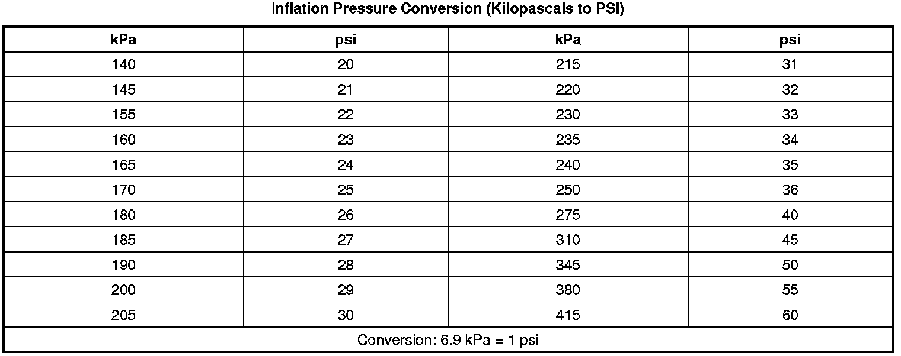

Tire Inflation Description
Tire Inflation Description
Important: This vehicle is equipped with a tire pressure monitoring system. Refer to Tire Pressure Monitor Description and Operation (Description and Operation) .
This vehicle has been engineered to operate up to the stated load capacity with wheel and tire assemblies of the type, size, construction, and configuration as originally installed. Maintenance of the tire inflation pressures is critical to the continued satisfactory performance, handling, and operating economy of the vehicle. Operation with incorrectly or improperly inflated tires can adversely affect vehicle performance and may contribute to the following:
* Reduced fuel economy
* Tire overloading
* Shortened tire life
* Excessive tire wear
* Uneven tire wear
* Vehicle handling concerns
Inspect the tire pressures when the vehicle has not been driven for at least 3 hours or not more than 1.6 km (1 mi) and when the tires are cool to the touch.
Tire inflation pressures should be inspected monthly and before an extended trip and adjusted to meet the specifications listed for the particular vehicle. Replace any missing or damaged tire valve stem extensions and/or caps to prevent the intrusion of water and contaminates.
One pound per square inch (psi) equals 6.9 kilopascals (kPa). The following table illustrates the conversion of kilopascals to pounds per square inch:

For the correct inflation pressures refer to the vehicle tire placard.
Tires inflated to a higher than recommended pressure can contribute to the following conditions:
* A hard ride
* Tire bruising
* Rapid tread wear at the center of the tire
Tires inflated to a lower than recommended pressure can contribute to the following conditions:
* Tire squeal on turns
* Hard steering
* Rapid and/or uneven wear on the outer edges of the tread
* Tire rim bruises and tire rim rupture
* Tire cord breakage
* High tire temperatures
* Sluggish vehicle handling
* Higher fuel consumption
Unequal pressure on the same axle can cause the following conditions:
* Uneven braking action
* Steering lead
* Imprecise vehicle handling